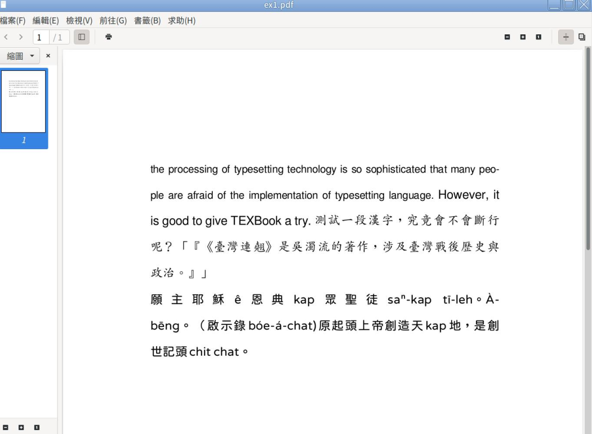
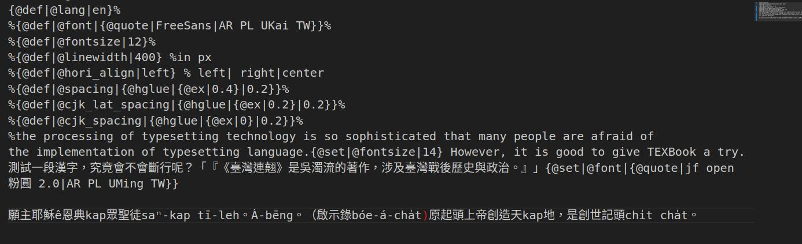

《分散式文學》HTML版本主要為方便手機瀏覽而設，基於人手所限，排版較粗糙；要珍藏本刊或在其他類型裝置（平板、電腦等）體會作者和編委的功夫，請按此瀏覽／下載PDF版本。
感謝聯邦宇宙，特別是 g0v.social 小站讓我們相遇。
編輯團隊
主編：MJ
責編：Alucan、dale、KT、Lîm Tsú-thuàn、裕、Mi、Ning
美術總監：ltlnx
臺語顧問：yoxem
資訊組：日落
總召：CY
武漢肺炎疫情封山期間，外出並不方便，工作之餘，買了好多書來讀。從原本的實際上山，變成紙上爬山，例如徐如林與楊南郡合著的《能高越嶺道‧穿越時空之旅》、楊南郡中譯鹿野忠雄所著的《山、雲與蕃人 : 臺灣高山紀行》、台大登山社出版的《白石傳說》與《南南山語》……等。邊讀邊對照登山地圖，我有上河文化出版的全套《台灣百岳全圖》與《中級山地形圖》。不只國內的，國外的也閱讀不少，工作學校的圖書館電子書有 Backpacker Magazine 與 National Park Journal，故在紙上也爬了不少美國的山。
而國外的書我最想分享一本： The Shining Mountain 。作者是 Peter Boardman ，寫他與 Joe Tasker 於1976年首攀 Changabang 西壁的事。我後來印出他們攀爬的路線圖1，再與書對照著走一次。四十六年過去了，有個強大的小團隊復刻了這條經典技術攀登路線，令人興奮（例如看到 The Barrier 的畫面），不只是看書想像2。此前，至少有二十個團隊嘗試過，但都鎩羽而歸。
除了喜歡閱讀、走山林，因多年來努力學習英文，對語言現象也是充滿興趣，看前述影片時，聽 Kiwi and Aussie accent 頗覺有特色，算是題外話，例如這些字的發音： failure/day/later/amazing/delay/straight/way/mate 。
長時間處在高海拔，因缺氧，會產生活在夢裡的狀態。搭帳篷要兩小時；溶雪煮水補充水分也要兩小時。被山虐到極點，共通的想法就是：這是最後一次（但對愛山人而言，從不會有最後一次，只會一次又一次，樂此不疲）！相信他們是真心向 Peter Boardman 與 Joe Tasker 致敬3。
相較於登山（mountaineering），我偶爾上山只是健行（hiking），初衷很簡單：親近山林美景，並希望身體健康。初衷仍保有，持續走，拍拍照。這類高手路線，則是雖不能至，心嚮往之。有次走古步道後的車行下山，想了一副對聯：行過春夏秋冬季，踏遍東西南北峰；横批：友山醉好。有好大口氣的自我期許：有書有山有肝膽；亦狂亦俠亦溫文。
書很精采， Peter Boardman 與 Joe Tasker 行前在 Joe 工作的冷凍工廠測試設備，完成 Changabang 西壁攀登後回鄉出了火車站月台， 工廠夜班人員全著藍色工作服在車站大廳等他們，彼此笑容相迎。在山上工作宿舍的寒流夜再讀一次，倍感溫暖；影片內容豐富、具象、震撼，也不要錯過。
說到我和「興趣」的關係，就想到游泳池——並不是說游泳是我的興趣，而是，我常會想到游泳時入水的那個瞬間，原本世界中的光亮與聲響留在水面上，抬頭還會看見它們順著扭曲的波紋在水面上閃動，但我整個人已經浸到冰涼的水下，我全身的皮膚、血液的流動，包括呼吸的方式都在重新適應，我投入了一個我在岸上應該已經瞭解、實際沉浸其中時卻以所有感官重新認識的世界。
那就是「興趣」。
我喜歡過又放棄了的興趣有很多，就像我喜歡過又放棄了的人們一樣。那真的是和我的戀愛模式很相像：為了微不足道的小小原因，我對某項事物（在戀愛的話就是人）產生了興趣，我瘋狂地迷戀上這個人事物，像向日葵追逐陽光，像仙女棒被火柴點亮。我領略了過去不曾見過的視角，棋盤上撥動幾顆棋子的行動變得如此有趣、車輪穩定向前滾動載我穿過閃耀的海邊或林葉間落下的日花、輕拉毛線讓它反覆穿過指間形成一片規律花樣時的觸感、從最基礎不起眼的小事做起直至一盤菜或一只布包確實完成……我喜歡過那麼多的興趣，也已經永遠地離開了幾個。
媽媽有時候會問我，你以前那麼喜歡＿＿，現在怎麼都不做了？我答不上來。我甚至連惋惜的心情都沒有，不愛一個人就只是不愛了，我不想講那個不愛的人的壞話但也不想再談他，不愛了就是一點波紋都不興，我走過去也不會想再下那片水域。就像年輕時可以放下一切和某個人私奔，過了一段日子卻想放棄和那人一起的全部生活以離開他。所幸興趣終究不是一個人，它不會指責我負心，旁人也不至於指責我薄情，我只是把棋盤收到再也不會拿出來的角落。
這就是「興趣」的終結嗎？我不曉得要對誰負疚，卻隱隱覺得背叛了過去的自己。「你呀，就是五分鐘熱度」，兒時收到的叨念變成了一句咒語，每逢想起，頭上的金箍像是棘冠一樣刺痛自己。但那有什麼辦法呢？中年以後的我不那麼容易戀愛了，卻還持續在掉進一個又一個興趣的坑。沒有興趣的話，人和鹹魚還有什麼分別？
小站要做小誌，說是要把大家的文章集合起來，馬上報了名要參加編輯工作。
開會中大家定的題目是「興趣」，想說既然是第一次，題目要比較好寫。確實很好寫，因為我隨便想就有一堆興趣：特攝、歷史、文學、電腦科技、政治、旅遊、底片攝影……
等等，我太多興趣了！要下筆反而不知道該寫哪一樣，而且雖然說是興趣，但我每一樣的造詣都不深。在金庸小說《神雕俠侶》中，金輪法王說楊過武功「駁而不純」，我大概也差不多。我就是都沒有鑽研的恆心，才會興趣一堆，卻無一精通。
所以我真正可以寫的是什麼呢？轉念一想，我感悟最深的興趣，其實是寫作吧。
小時候母親有意無意讓我看很多小說、散文之類的書籍，在別人還在看童書的時候，我已經認出很多字了。再到後來家境變差，家中娛樂很少，我也很少被允許看電視，閱讀慢慢就成了我主要的娛樂。看著看著，就覺得書中那些文章，好像我也可以寫。還記得小學時的作文課，都是由寫二、三百字的小文章開始，同學在埋頭苦思如何寫出一個段落的時候，我已經在苦惱文章篇幅大大超過規定了，老師看到我洋洋灑灑的文字，總是大吃一驚。
從這時候開始，我就知道自己比不少同齡的人擅於寫作。 以前老師很愛叮囑我們寫作要寫大綱、要有草稿，寫出來的文章才會有架構，我反而覺得這些都很礙事。對我來說，在我下筆前，文章大概長什麼樣子，要用什麼句子，已經在我腦海中反覆成形了，我只是把我腦海裡面出現的文字，在紙上默寫一次而已。如果有不夠好的字句，我就在腦海裡唸一遍，即席修改於我也並不難。後來才知道，我這種寫作習慣叫「腹稿」。別人寫作要在紙張上構思，我在內心就足夠醞釀好內容了。
求學時期我大部分時間成績都不算十分突出，只有寫了詩獲獎、寫的文章被刊登在校內刊物、作文課被老師點名出來朗讀自己的作品，是我廖廖可數的威風時刻，是我的核心記憶球。隨時代演變，我寫作的媒介，也漸漸從紙筆，到早年的個人網頁，以及後期的部落格。
但和我上面說的很多興趣一樣，我沒有在寫作上堅持下去。再長大一點，遇到更多會寫作的人，也遇到一些不算很會寫作、但也能寫出很吸引的文章的人，內心開始多了一道聲音：「原來這種事也有不少人會做的很好」，「原來自己也沒有這麼了不起」，加上寫作也沒有帶給我考試以外的實際好處，我找不到一直寫下去的動力。
以前會覺得文字不夠好就沒有人看，後來 Facebook 、 Instagram 等網上平台出現，很多人也會自己開一個專頁寫文章，有的人默默耕耘，就算寫的題材內容不怎麼樣，竟然也收獲一批忠實讀者。這時候我又覺得，我想不到這麼多題材好寫，寫了也是枉然。幾年前我有一位小學同學，小時候也是很會寫作，竟然寫出了一部電影4，入圍了香港電影金像獎。我五味雜陳，如果我沒有放棄寫作的話，會不會也可以像他一樣？會不會我也可以寫出被很多人閱讀的作品？
事實是我放棄了寫作，寫作也放棄了我。
一直到很後來才意識到，那些寫得比我好、或者文筆不夠好但同樣寫出好文章的人，他們跟我最大的分別，是他們會一直寫，不論讀者的多少，不論回報的高低，他們都願意寫。那些字裡行間的歷練，使他們成為了文字讀起來津津有味的作者。
說到這裡我很感謝 g0v.social 這個社交平台小站。那裡活躍的人不多，但有很多重視他人感受、樂意互相交流的網友，也要感謝 Mastodon 的500字限制，我發現慢慢的我又在小站重拾寫作的樂趣。起初我只是想分享一些我的感受見解，我開始用500字的限制寫一些小短文，然後意外的得到了迴響，站友在我的文字下面分享他們的感受、交流經驗。我又一次在文字裡找到意義。
後來有一些站友開始寫電子報，這些年來雖然疏於寫作，倒是有訂閱一些電子報。我對這種寫作模式很感興趣：作者和讀者緊密交流，定期分享看到的、經歷的有趣事物，對生活做觀察，再用文字表達。我覺得這樣的形式，我也可以做到。於是從今年1月1日開始，我每星期開始更新電子報，在我寫這篇文字的時候，我的電子報已經寫了八篇文章、超過一萬字的內容了。
日前我在 SNS 上面看到有人推介一支影片，內容是說有一類人叫「Self-sufficient introvert」5 ，字面直譯就是自我滿足的內向者。影片說這類內向者享受獨處的時光，並不是孤僻古怪，而是他們需要時間在腦內產生想法、連結與洞見，而這類動作又會轉化成創造力，我才驚覺我就是一個自我滿足的內向者。現實的我很不會講話，思考很緩慢，又偏愛獨處，寫作對我來說就是我的口，我混亂的思緒可以通過文字段落加以整理，我的見解也通過文字得以宣洩。文字就是我表達內心的途徑。
我很慶幸我又重新開始寫作。
如果你無法肯定自己的文字夠不夠好，先去寫吧；如果你不知道你的文字會不會受歡迎，先去寫吧；如果你不知道你的文字夠不夠豐富，也先去寫吧。只有寫作這件事並不會背叛你，因為每一次的寫作，都是你和自己內心的對話，這無關文筆、內容和長短，寫作本身就是一個足夠有趣的過程，它就好像運動、繪畫、表演藝術一樣，是可以被培養的興趣。
正在閱讀這篇的你，也一起來寫作吧。
關於我
也許從很小的時候就被養成了探索的習慣，被業務推銷成功進到書庫的全彩百科全書（其實我很喜歡那套書）、對小朋友來說難度偏高的益智型電動積木組合、科工館的各種暑期活動與展覽、半途而廢的打擊樂課程到光頭老師的美術課，家長可以說是想盡辦法讓我找到中意的那條人生路。即使如此，自認不曾對任何一件事有著極大興趣的我，在數年前即將踏入社會的關鍵時間點，依然感到迷茫，甚至找了一位諮商師「人生商談」，我有因此得到明確的答案嗎？至少在那個時間點還沒有。然而，「青梅竹馬贏不了天降」這個阿宅對戀愛故事走向的假說，在我的社群貼文時間軸上以另一種形式出現了：「免費，還有額外零用錢的無人機課程。」
參與多人協作
甫註冊 g0v.social，只把聯邦宇宙當成新興的資訊來源，我這個北漂的高雄市民剛上完培訓課程考到證照，一腳踏入無人機職涯，絕對算不上穩定，甚至可以說是高風險，但本著再不濟也不過結束後去找個打工的想法，一群人辦了場無人機競賽與研討會的大型活動，本人則負責構思全新的無人機競賽項目（當然，少不了打雜），從那場活動發現，大家一起完成一件事其實很有趣，也因此對展會相關活動產生了興趣，這是我參與協作事務的開端。
編輯們的協作平台
過去使用 Obsidian 為參考書籍《創造展覽：如何團隊合作、體貼設計打造一檔創新體驗》製作的學習白板依然能夠啟發一些想法，卻難以多人共享，當時，Poga 站長向我推薦的線上白板服務： Figjam 在競賽規則的會議上幫了很大的忙。
現在加入小站雜誌的編輯群，大家則看中素材隨手可得的 Canva 白板讓提案更具體，搭配 hackmd.io 平台共筆會議紀錄，再佐以線上語音的好伙伴 Discord （以上沒有業配。）
台灣與香港的編輯們在沒有形體的會議室催生的這本《分散式文學 Diversitas》，正在閱讀的你們有沒有興趣投稿呢？
我接觸電腦程式撰寫的時候，前二個學的語言是 VB 和 C 語言，但是影響我最大的語言，不是 Python ，也不是 Scheme 、 OCaml ，某方面是 LaTeX ——當然不是在程式設計的思路上， 而是對排版美觀度的追求，以及激發出我想要重複輪子的一個長久的夢。
很久以前接觸 LaTeX 時，便對其產出的 PDF 非常的喜歡，但是對其語法的不一致，以及為什麼會有怎麽樣的異常行為，感到甚是奇怪，恰似許多使用 LaTeX 排論文的人都有的感觸：為什麼 LaTeX 有這麼多坑。那時候高中的我，對 LaTeX 各種演算法一無所悉，以及對程式語言理論學（PLT）不知道的我，竟然寫了一篇希望用 XML 來組織 LaTeX 的標記語言。事後想想，那時有點無知，但是對於結構化格式這或許是比較好的做法，雖然對於如何標記演算法還是力有未逮。
後來隨著寫程式瞭解的知識越來越多，也開始著手想要完成一個編譯器，來將自定的程式語言，轉換成數位排版後的 PDF 。但是往往做到分析器，就是把程式語言拆解為語法解構樹（AST），以利產生 PDF 的編譯器知道我們如何控制排版的活字位置，就失敗了，因為自己能力不夠，經驗不足，就算廢寢忘食讓家人擔心，也終究變成沉沒成本，一去不回。浮浮沉沉這幾年，有時候就算換語言突破這個門檻以及語法設計的門檻，但是又要面對如何選一個好的 PDF 產生函式庫、效率問題、以及演算法的瞭解等等大山，因此屢戰屢敗，在一次一次懊惱之中。
最後我用 Julia 這個動態型別語言，並且嘗試縮小自己的目標，不要實作其他像是阿拉伯文、希伯來文與傳統蒙古文，就只實作漢字和拉丁字， 然後又嘗試閱讀 TeXBook 一些關於 LaTeX 語法設計的細節，並且分小部件實作斷行和自動斷字演算法，以及 PDF 函式庫的界面整合套件，最終在去年的新年連假，雖然程式碼非常的醜，語法功能非常陽春，而且還是有很多 bug ，但是還是初步跑出想要的結果，我非常高興。
我想可能是因為比較常看書，所以對於書籍排版的美學特別感興趣。但是，為了這個燃燒生命鑽研好幾年，留下了許多不承受的業餘專案（side project）到底有什麼意義呢？這些東西和我的工作八竿子打不著。但是我相信，在現在 AI 快速產出的速食程式碼，至少這些稚拙的代碼，還是有背後的肝臟和靈魂傾注的痕跡。我也從這一連串的試驗中，瞭解如何縮小問題，以及解析問題的本質來解決。
但是因為人生的規劃，以及維持身心的健康，至少短期間內不會再浪擲靈魂了，就讓它變成回憶吧。
原始碼：

排版結果：

剛過去的周日（一月十八日），一年一度的香港馬拉松舉行了。 我過去也兩度參與這項盛事的十公里項目。
那是挺久以前的事了。
十二歲至廿一歲時——中一至大三時——除了幼稚園和小學以外的求學時期，我都是學校的越野跑隊代表。我的家庭裏除了我之外，沒有人活躍於運動；我不是一位有天資的運動員。翻開我的收藏，我一面金牌也沒有得到過；中四才得到第一面獎牌、校內運動會女子乙組八百米的銅牌。不過許多長期運動競技的人常有的，「傷患」，我也有。足踝常常在長時間行走後感到痛楚。那是源於十七歲時，不小心在公園扭傷後，為了校際比賽仍堅持密集練習；二十歲時同時忙於女子足球隊和越野跑隊的練習，這個傷患復發，也因著要比賽而強撐著。
許多不恆常運動的都市人通常有的， 超過建議水平的「身體質量指數（BMI）」，我現在也有……
大學時，我用了不少心力，放在參與運動和運動相關行政、組織事務。我在即將畢業的大學三年級，幫忙組織了創校以來首支女子足球隊，又擔任陸運會和環校跑的籌委。可惜大學時最親近的隊友們後來竟因一些感情事故而斷絕往來。
沒有人一起分享熱血回憶的我，現在只能呆坐電視機前看轉播的賽事，或在串流平台看運動動畫嗎……
關於運動深刻的回憶之一，是一件糗事。大二那年的大專陸運會，本來都想著跑「倒數第一」的了——我們不是體育強校，教練安排許多隊員參賽也只是為了看環境會否激發潛能，造出個人最佳成績（Personal Best，PB）。開跑時，我的腸胃不知怎麼了，竟不斷放屁，跑了一段距離才停下來。我沒有告訴教練這件事，但這件事促使我大三時拒絕參加大專陸運會（只是當隊友的「經理人」）。我「逃跑」，不是因為我怕丟臉倒數第一，而是我怕腸胃不受控而丟臉。其實那同樣軟弱 。
從來了解自己資質的我， 在校隊訓練一直保持高出席率，甚至會自己「加操」。我以此自豪：一個「不求與人相比，只求超越自己」的跑手。不怕在賽道上落敗，但還是害怕其他形式的丟臉，害怕被議論——原來還是軟弱。
我很懷念曾經熱血的自己。那十年間，有為進步而喜悅的我，有被前輩稱讚練習時堅持沒有停下來而沾沾自喜的我，有為未能進校內運動會三甲而哭的我，有那首次跑進了三甲而雀躍的我，有為隊友缺乏團隊精神沒來練習而生氣的我……。
忙碌的生活和間中痛楚的足踝成了我的藉口，不去運動。我可是相當了解運動對身心健康的益處。
我還是很關注本地體壇，對剛過去的馬拉松各項目的本地冠軍的名字都不陌生。我還是很愛看運動員的訪問或傳記。大學時，我沒思考過自己為何願意用那些可以放在學業或打工的時間，放在運動相關事務上。現在想來，原來我最欣賞運動員的，是「不放棄」。
大學時，有一次田徑混合練習，教練在跑道上安排了欄架；從沒嘗試過跨欄的我本想由欄架下鑽過去，在教練嚴厲督促下，我順利跨過欄架了。
本來預期文章結尾是「我要重新出發，做個勤於運動的人」。可是我想，我首先要成為一個堅強、能夠面對恐懼的人。
但願我可以做到。
對我來說，用著鬆散的步伐，沒有明確的目的，走在人類的聚落裡，是有趣的。也必然會遭遇不有趣的狀況。
在相似的建築、路邊的花草之中，瞥見讓自己身心為之一亮的畫面，或驚恐或喜愛。偶爾轉進甚少、甚至是不曾踏足過的巷弄，就像是解開自己腦海的遊戲地圖碎片，又是一個微小的成就。
不同的城鎮、聚落，有著不一樣的風味。
在盆地中心，也是市中心，看到最多的是一樓的信箱塞滿廣告紙。
在漁港、漁村，則是家家戶戶都放了幾顆浮球。
在盛產農作物的地區，有很多販售告示小紙板歡迎著。
喜歡蹲在港口邊，看著發現的小魚群游來游去。
在有著雅致園藝造景的門戶停下腳步欣賞，離去前留下一句「他家盆栽擋到人行空間了。」
看著破敗的屋宅，臆測人家的故事。
民宅稀少的郊區，會突然和貓貓狗狗四目相接。
遇到貓，貓會停下腳步觀察我。
遇到狗，我會停下來觀察狗，然後退避三舍。
走啊，散步啊～
心情好的時候，期待所有路途中的相遇。
心情差的時候，如果能在每一個步伐所冒出的蒸氣之中，散去些許煩悶，那便是最好的驚喜。
我是一位目前擁有20個興趣的 AuDHDer （自閉症 + ADHD 者），但在這裡，我想聊聊其中，我自認最特別的興趣——探索自閉症者線上社群的文化。
2018年（約莫高中二年級），我懷疑自己可能是自閉症者，而開始上網查閱資料。從探索到確診（2023年，大學三年級）的過程中，我加入許多使用英文的自閉症者臉書社團，逐漸被其中多采多姿的活動、有趣的話題與 hashtag 吸引。隨著接觸的身心障礙議題越發廣泛與深入，便開始思考：聾人社群有屬於自己的文化，那自閉症者社群也會有嗎？
根據重編國語辭典修訂本的釋義，文化是「人類在歷史發展過程中創造的總成果」。因此我認為，自閉症者英文（線上）社群在發展過程中創造的許多節日、 hashtag ，像是「自閉症驕傲日（Autistic Pride Day）」、抵制自閉症之聲（Autism Speaks）點亮藍燈（Light It Up Blue）活動的「Red Instead」和「Tone It Down Taupe」，就是屬於英文社群文化的一環。
那麼，在臺灣的中文線上社群，會和國外的英文社群有什麼不同呢？我們（將會）使用哪些特定詞彙、談論哪些議題、發起哪些行動？這成了我現在最想探究的議題。
將來，我會透過建立「自閉症與神經多樣性中文大百科」，記錄臺灣與國外社群的用語、提出的概念、發生的重要事件，讓這些珍貴的社群資產，能被完整地保存下來 。
走在探索自閉症者線上社群的路上，雖然有點孤獨，但非常有趣。期待自己能成為稱職的社群文化記錄者（研究者我還不敢當，畢竟沒接受過正式的學術訓練），讓自己的記錄，成為臺灣自閉症者社群生生不息的能量。
不像是《一拳超人》中的琦玉一樣，只是因為興趣使然而成為厲害的英雄， 我就如作品中的無證騎士一樣，會寫這篇文章就只是因為我有興趣，想作為一個拋磚引玉的磚
陽光，空氣，水與音樂
雖說是不專業，沒辦法對 Britpop 演進倒背如流，沒有對各國 indie 有深入的挖掘，主流樂團甚知不多，即使如此還依然喜歡音樂。
沒有到世界各地現地參戰，無法在 live 的時候跟唱每一首歌，無法對 artist 每首歌如數家珍，即使如此還依然喜歡音樂。
喜歡挖掘到新音樂的時候，喜歡考古到經典歌曲的時候，喜歡被人推薦到厲害 artist 的時候，喜歡成功推薦音樂的時候，喜歡買到票的時候，喜歡在現場享受演出的時候，諸君，我喜歡音樂。
不敢自認聽很多聽很廣，也沒有系統性的去整理並瞭解風格脈絡，無法像 blogger 們整理出具有知識性的文章，也沒辦法在 live 之後馬上整理出演出歌單，但我還是會持續的聽，持續的挖掘，持續的在現場享受氛圍。不是為了要證明自己有多厲害而做，而是因為喜歡而做，對我來說興趣就是如此的一個東西。沒有要分出高下，沒有誰優誰劣，就只是喜歡，然後去做。找到自己熱愛的東西，然後持續投入，就只是如此的單純。曾經有某位 podcast 的主持人在書展上有寫到，人生，就是到死之前不斷的打發時間，而音樂，就是佔了我打發時間中很大的一環，希望每個人都能找到自己熱愛的東西，並投入享受其中，興趣使然，是否成為英雄並不是很重要的事情。
封面圖片作者：@bellamy
章節抬頭圖片作者：@gholk
本刊由 Typst 軟件排版，模板由 uwnibook-color （https://github.com/uwni/uwnibook-color ， Mozilla Public License 2.0）改製而成。
「跑步者星雲」圖片作者為維基媒體用戶 W4sm astro ，CC-SA 4.0 授權。
其他文章插圖均為原作者提供。